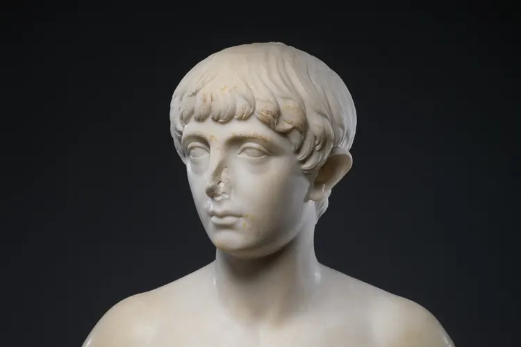

Шея, осанка, плечи: профиль начинается не с подбородка
Слабый подбородок и короткая шея на фото часто объясняются не костями, а тем, как человек держит голову.

Разговор о профиле обычно начинается с подбородка и челюсти. Но фотограф, который снимает человека сбоку, первым делом смотрит ниже: на шею, плечи и положение головы. Именно они задают линию, которую потом приписывают генетике.
Самая частая история называется «голова вперёд». Человек часами смотрит в телефон или ноутбук, и голова постепенно смещается вперёд от линии плеч. На снимке в профиль это выглядит так: шея кажется короче, под подбородком собирается складка, а угол между шеей и челюстью сглаживается.
Почему голова уходит вперёд
Причина обычно не в лени, а в обстановке. Экран стоит ниже уровня глаз, стул не поддерживает спину, перерывов нет. Мышцы, которые держат голову над плечами, долго работают в неудобном режиме, и тело постепенно привыкает к новому положению.
Плечи при этом часто округляются и тянутся к ушам. Грудная клетка опускается, и верхняя часть тела словно складывается. На фото такой силуэт читается как усталый, даже если человек выспался.
«Ко мне приходят с жалобой на слабый подбородок, а я вижу шею, которая весь рабочий день тянется к монитору. Начинаем мы с привычек, а не с лица.»
Жир и чёткость контура
Вторая переменная: процент жира в организме. Линия челюсти у двух людей с похожим строением может выглядеть по-разному просто потому, что у одного больше подкожного жира под подбородком и на шее. Когда общий процент жира снижается, контур проступает отчётливее.
Ключевое слово здесь «общий». Похудеть точечно в области лица нельзя: жир уходит по всему телу и в своём темпе. Жёсткие диеты и голодовки ради острых скул не дают обещанного результата, зато бьют по здоровью, сну и коже. Безопасный темп снижения веса лучше обсудить с врачом или диетологом.
Что действительно помогает
Базовый набор звучит скучно, и в этом его сила. Силовые тренировки с правильной техникой укрепляют спину и плечи, и держать голову ровно становится проще. Технику стоит поставить с тренером, а не наращивать вес на глаз. Сон влияет и на отёки лица, и на аппетит, а постепенное снижение веса помогает сохранить мышцы.
Остальное решают мелочи, которые повторяются каждый день:
- Ставьте экран ноутбука на уровень глаз: подойдёт и стопка книг.
- Поднимайте телефон к глазам, вместо того чтобы опускать к нему голову.
- Вставайте из-за стола хотя бы раз в час.
- Носите рюкзак на двух лямках, а не на одном плече.
- Раз в день проверяйте осанку в зеркале или отражении витрины.
Если шея или спина болят, немеют руки или кружится голова, это повод не искать упражнения в интернете, а записаться к врачу или физиотерапевту. Боль не стоит терпеть и «расхаживать» самостоятельно: сначала нужно понять её причину.
Ровная осанка не меняет черты лица. Она возвращает им естественную рамку, и иногда этого достаточно, чтобы собственный профиль на фото перестал казаться чужим.